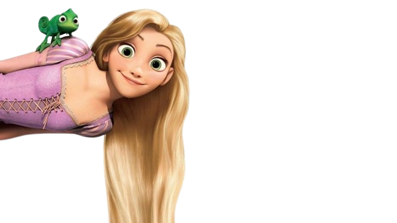
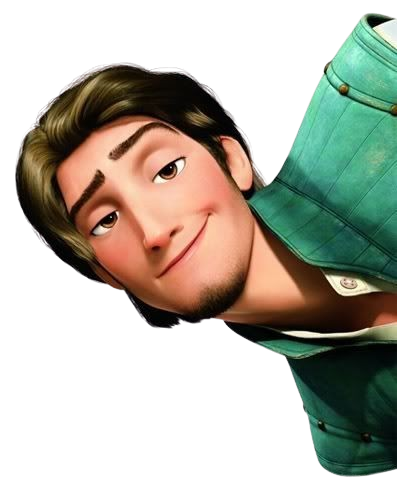
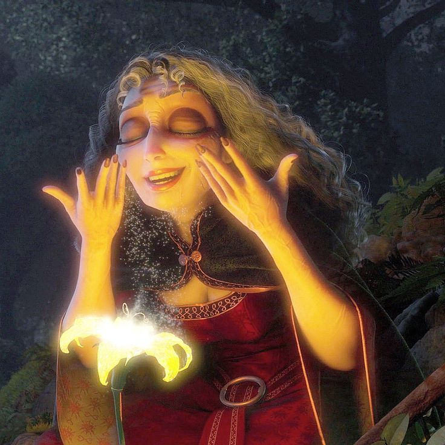
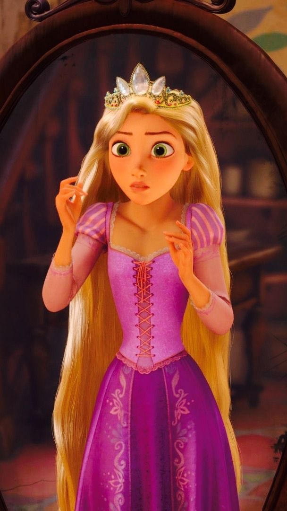
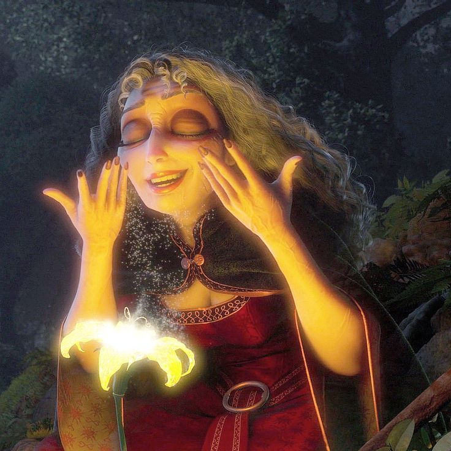
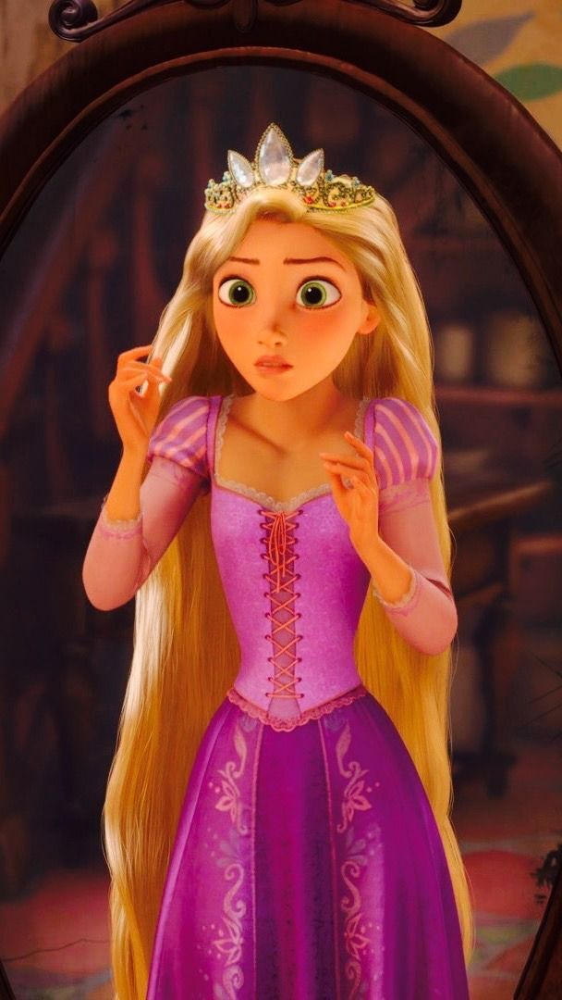

Ibu Gothel
CLOSE
prev
 next
next
Gothel adalah tokoh antagonis dalam film Tangled. Dia adalah seorang penyihir yang licik dan manipulatif, yang menculik Rapunzel saat masih bayi untuk memanfaatkan kekuatan ajaib yang ada pada rambut Rapunzel. Rambut Rapunzel memiliki kemampuan untuk menyembuhkan dan memberi kehidupan abadi, dan Gothel menginginkan kekuatan ini untuk mempertahankan kecantikan dan awet mudanya.
Gothel digambarkan sebagai sosok yang penuh tipu daya dan egois. Dia mengaku sebagai ibu Rapunzel dan merawatnya dengan cara yang tampaknya penuh kasih, namun sebenarnya dia sangat memanipulasi Rapunzel. Gothel sering menggunakan rasa takut dan rasa bersalah untuk mengendalikan Rapunzel, mencegahnya keluar dari menara dengan cara meyakinkannya bahwa dunia luar berbahaya. Meskipun berpura-pura peduli, Gothel hanya menginginkan rambut Rapunzel demi kepentingannya sendiri.
Karakter Gothel penuh dengan ketidakpercayaan diri dan kecemasan akan penuaan, yang mendorongnya untuk melakukan segala cara demi mempertahankan kecantikan luar. Dia sangat terobsesi dengan kekuasaan dan keabadian yang diberikannya lewat rambut Rapunzel, tetapi juga menunjukkan sisi kejam saat bertindak agresif terhadap siapa pun yang mengancam tujuannya.
Secara keseluruhan, Gothel adalah karakter yang kompleks dengan sifat kejam dan penuh manipulasi, yang hanya mencari kepuasan pribadi tanpa memperhatikan perasaan atau kesejahteraan orang lain.

Rapunzel tumbuh di dalam menara selama 18 tahun tanpa pernah meninggalkannya. Meskipun memiliki bakat luar biasa dan menjalani hari-harinya dengan berbagai aktivitas kreatif, dia tetap merasa kesepian dan sangat ingin melihat dunia luar, terutama lampion-lampion bercahaya yang terbang di langit setiap tahun pada hari ulang tahunnya. Dia tidak tahu bahwa lampion-lampion tersebut adalah cara kerajaan (dan kedua orang tua kandungnya) untuk mencari sang putri yang hilang.

Suatu hari, seorang pencuri tampan bernama Flynn Rider secara tidak sengaja bersembunyi di menara Rapunzel setelah mencuri mahkota kerajaan. Rapunzel, yang melihat ini sebagai kesempatan untuk melarikan diri dan menjelajahi dunia luar, membuat kesepakatan dengan Flynn. Dia akan mengembalikan mahkota yang Flynn curi jika Flynn membantunya melihat lampion-lampion tersebut secara langsung. Dalam perjalanan mereka, mereka menghadapi banyak rintangan, bertemu teman-teman baru seperti Maximus, seekor kuda yang awalnya memburu Flynn tetapi kemudian berteman dengannya, dan Pascal, bunglon kecil yang setia menemani Rapunzel. Di tengah perjalanan, hubungan antara Flynn dan Rapunzel berkembang menjadi cinta. Flynn membantu Rapunzel menemukan keberanian dan mengenal siapa dirinya sebenarnya. Akhirnya, Rapunzel menyadari bahwa dia adalah putri kerajaan yang hilang. Mother Gothel, yang merasa posisinya terancam, berusaha membawa Rapunzel kembali ke menara, tetapi Flynn berhasil menyelamatkannya dengan mengorbankan dirinya. Dalam aksi heroiknya, Flynn memotong rambut Rapunzel, menghilangkan kekuatan ajaibnya dan menghancurkan keabadian Gothel, yang akhirnya lenyap. Film ini berakhir dengan bahagia, Rapunzel bersatu kembali dengan keluarganya, dan Flynn (yang nama aslinya adalah Eugene) tetap bersama Rapunzel. Tangled menjadi salah satu film Disney yang sangat populer karena kombinasi cerita klasik dengan humor, petualangan, serta lagu-lagu yang diiringi musik karya Alan Menken.
.jpg)


 


